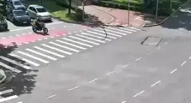

Reportar um ponto de trânsito
Conte onde o semáforo demora ou a fila se repete. Seus reportes ficam salvos só neste navegador.
Novo reporte
Seus reportes

Conte onde o semáforo demora ou a fila se repete. Seus reportes ficam salvos só neste navegador.
